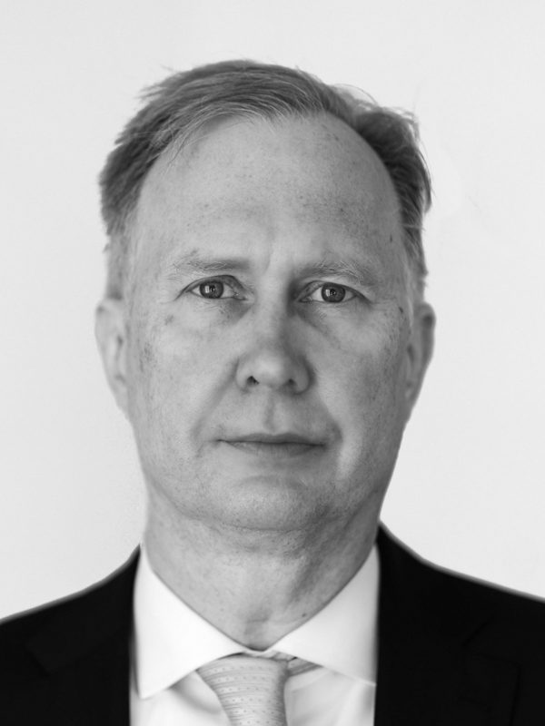

Sigurgeir Tryggvason
Chief Executive Officer
Sigurgeir has over 25 years of experience in energy-related projects, real estate financing, specialized investments, and corporate finance. He previously led real estate and project finance at Kaupthing Bank, worked in corporate advisory and credit analysis, and served as Head of Project Finance at Norðurál.
Sigurgeir holds four master’s degrees; in International Business Management, MBA, Electrical Power Engineering, and Law.
sigurgeir@summa.is+354 842 1554